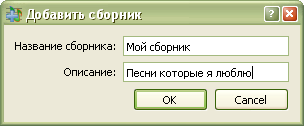

3.1.1 Добавление новых сборников
При добавлении (копировании) новых песен, появляется диалоговое окно с предложением добавить новый сборник.
Введите информацию о новом сборнике, нажмите на кнопку "Сохранить" и внесите в него песню.
Сборник можно также импортировать из файла базы данных (*.sps).
Подробнее:

Введите название нового сборника.
Введите краткое описание нового сборника.
Новый сборник будет добавлен в базу данных.
Диалоговое окно закроется и вы сможете продолжать добавление (копирование) песни в данный сборник.